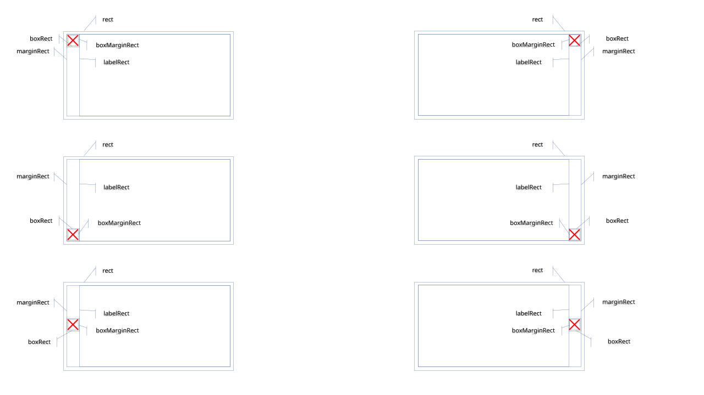

4.0 控件概念与共性
本章逐个讲解 20 个控件。阅读任一控件页前，建议先掌握本节描述的控件共同骨架。
4.0.1 继承体系
Control（根抽象：位置/尺寸/可见性/父指针/事件入口）
└─ ControlImpl（通用实现：状态色、属性系统、焦点支持）
├─ Label / Button / CheckBox / EditBox / Slider / ScrollBar /
│ ProgressBar / ComboBox / NumericUpDown / Splitter /
│ HandleControl / TextArea / ColorPicker / Menu 三件套 ...
└─ Panel（容器：子控件管理 + 布局引擎）
├─ Bench（控件树根 / 测试台，也是 TopControl）
├─ WinFrame（可拖拽缩放的窗口容器）
└─ Dialog → ConfirmPopup → Popup（弹窗族）
旁支：Actor → Material → ControlImpl（纯图片显示）
LuotiAni → Material → ControlImpl（关键帧动画）4.0.2 每个控件的六个共同维度
本手册的每个控件页都按固定六节组织：
| 节 | 内容 |
|---|---|
| 控件的创建 | C++ 构造 / Builder / C ABI 创建函数 / JSON type |
| 控件的方法 | 全部公开方法（签名 + 说明） |
| 控件的属性 | 属性系统键名：类型、默认值、说明 |
| 控件的回调 | 事件名、触发时机、负载 |
| JSON 语法 | 真实布局 JSON 节点示例 |
| C++ Binding 样例 | 可运行的绑定用法代码 |
4.0.3 所有控件的共性
位置与尺寸（SRect）
struct SRect { float x, y, w, h; };
struct SPoint { float x, y; };
struct SSize { float w, h; };
struct SColor { uint8_t r, g, b, a; };所有控件构造都接受 SRect；Builder 接受 SRect；C ABI 工厂接受 x,y,w,h 四个浮点。
状态色（StateColor）
颜色类属性多为「状态色」：同一控件在不同状态（normal / hover / pressed / disabled）可有不同颜色。JSON 中写为：
"colors": { "background": {
"normal": "#3C3C3CFF", "hover": "#4C4C4CFF",
"pressed": "#2C2C2CFF", "disabled": "#808080FF" } }通用属性（每个控件都有）
| 属性 | 类型 | 说明 |
|---|---|---|
visible | Bool | 可见性 |
enabled | Bool | 是否响应交互 |
transparent | Bool | 背景透明（不绘制背景） |
border-visible | Bool | 边框可见 |
background / border | StateColor | 背景 / 边框状态色 |
text / text-shadow | StateColor | 文本色 / 文本阴影色（含文本的控件） |
三种创建方式
// 1) C++ 直接构造（继承自核心库的控件）
auto btn = make_shared<Button>(parent, SRect(20, 20, 120, 36));
BENCH->addControl(btn);
// 2) Builder（推荐：链式配置 + 更完整的高级选项）
auto btn = ButtonBuilder(parent, SRect(20, 20, 120, 36))
.setCaption("OK").setOnClick(cb).build();
// 3) C ABI 工厂（经 UICornerstoneAPI.h）
UIControlHandle btn = UICornerstone_CreateButton(g_inst, "OK", 20, 20, 120, 36);父控件与控件树
- 容器（Panel 族）用
addControl(shared_ptr<Control>)挂子控件； - 顶层控件都挂到
BENCH（每个 UIContext 的控件树根，见 4.2 Bench）； - 控件树遍历：
findControlById(id)按 id 查找（JSON 布局的 id 即用此查询）； - C ABI：
UICornerstone_FindControl(inst, "id")返回句柄，之后统一走属性系统操作。
C++ Binding 的 Control 代理
Binding 中所有工厂返回 Control 代理对象，统一属性 API：
Control c = ui->CreateButton("OK", 20, 20, 120, 36);
c.SetString(PropertyNames::kCaption, "OK");
c.SetBool(PropertyNames::kEnabled, false);
c.SetCallback(PropertyNames::kEventClick, [](const Event&){ /* ... */ });
c.SetStateColor("background", n, h, p, d); // 四态背景
std::string s = c.GetString("caption");4.0.4 截图

CheckBox 样式图样（classic / cross / circle）

ColorPicker 弹窗：预设色网格 + RGB/Hex 调节